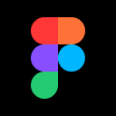
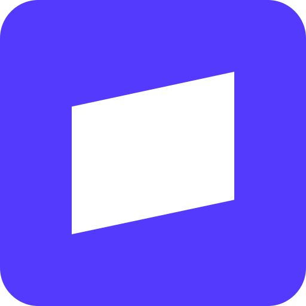

Figma
Design
Figma is an American software company that provides a platform for collaborative web application for interface design, with additional offline features enabled by desktop applications for macOS and Windows. The feature set of Figma focuses on user interface and user experience design, with an emphasis on real-time collaboration, utilizing a variety of vector graphics editor and prototyping tools. The Figma mobile app for Android and iOS allows viewing and interacting with Figma prototypes in real-time on mobile and tablet devices.
How we use it Design handoff and mockup review via the Figma MCP — the agent reads design context straight from files.
Similar tools Sketch · Penpot
Type FreemiumCountry USASovereignty Hosted SaaS only — no self-host option. Penpot (listed above) is the open-source, self-hostable alternative.

Canva
Design
Canva, Inc. is a multinational software company launched in 2013. The platform provides a graphic design platform to create visual content for presentations, websites, and other digital products. Its uses include templates for presentations, posters, and social media content, as well as photo and video editing functionality.
How we use it Quick branded graphics and one-pagers generated agent-side through the Canva MCP.
Similar tools Adobe Express · Piktochart
Type FreemiumCountry AustraliaSovereignty Hosted SaaS only.

Miro
Collaboration
Miro is a collaborative online platform designed to support teams in planning and execution across different locations and time zones. It is used for a variety of purposes, including brainstorming, agile planning, customer journey mapping, product design, and remote workshops. As of 2025, the platform is utilized by over 90 million users and more than 250,000 organizations worldwide.
How we use it Whiteboard diagrams and planning boards the agent can create and read via MCP.
Similar tools Mural · FigJam
Type FreemiumCountry Russia (founded Perm 2011 as RealtimeBoard; now co-HQ San Francisco/Amsterdam)Sovereignty Hosted SaaS only.

Notion
Productivity
Notion is a productivity and note-taking application developed by Notion Labs, Inc. It serves as a workspace for notetaking, knowledge management, data organization, and project and task tracking. It was first released in 2016 and is available on the web and as desktop and mobile apps. It is headquartered in San Francisco.
How we use it The operational backbone — sprint queue, human backlog, and job pipeline all live in Notion, read and written by the agent.
Similar tools Coda · Obsidian
Type FreemiumCountry USASovereignty Hosted SaaS only — data is exportable but there is no self-host option.

Slack
Communication
Slack is a cloud-based team communication platform developed by Slack Technologies, which has been owned by Salesforce since 2021. Slack uses a freemium model. Slack is primarily offered as a business-to-business service, with its user base being predominantly team-based businesses while its features are focused on business administration and communication.
How we use it Webhook alerts from overnight builds land in Slack so failures are visible by morning.
Similar tools Microsoft Teams · Discord
Type FreemiumCountry Canada (founded Vancouver 2009 as Tiny Speck; now HQ San Francisco, USA)Sovereignty Hosted SaaS only — self-hostable alternatives exist (e.g. Mattermost) but are not in use here.

GitHub
Development
GitHub is a proprietary developer platform that allows developers to create, store, manage, and share their code. It uses Git to provide distributed version control, and GitHub itself provides access control, bug tracking, software feature requests, task management, continuous integration, and wikis for every project. GitHub, headquartered in San Francisco, is operated by Github, Inc., a subsidiary of Microsoft since 2018.
How we use it Every product ships from GitHub — repos, Actions CI, and free static hosting on GitHub Pages.
Similar tools GitLab · Codeberg
Type FreemiumCountry USASovereignty Hosted SaaS, with a self-hosted git mirror on Codeberg kept as a sovereign fallback (git itself is fully portable).
Playwright
Testing
Playwright is an open-source automation library for browser testing and web scraping developed by Microsoft and launched on 31 January 2020, which has since become popular among programmers and web developers.
How we use it Nightly headless-browser smoke tests against every live product — no sprint is Done until its Playwright spec passes.
Similar tools Cypress · Selenium
Type Open-sourceCountry USA (Microsoft)Sovereignty Self-hostable / sovereign — runs entirely locally, no cloud dependency.

Windows Task Scheduler
Automation
Task Scheduler is a job scheduler in Microsoft Windows that launches computer programs or scripts at pre-defined times or after specified time intervals. Microsoft introduced this component in the Microsoft Plus! for Windows 95 as System Agent. Its core component is an eponymous Windows service. The Windows Task Scheduler infrastructure is the basis for the Windows PowerShell scheduled jobs feature introduced with PowerShell v3.
How we use it Fires the 2am overnight build locally — no cloud cron service, no subscription, no external dependency.
Similar tools cron · Jenkins
Type Free (bundled with Windows)Country USA (Microsoft)Sovereignty Self-hostable / sovereign — runs entirely locally, no cloud dependency.

Cloudflare
Infrastructure
Cloudflare, Inc., is an American technology company headquartered in San Francisco, California, that provides a range of internet services, including content delivery network (CDN) services, cloud cybersecurity, DDoS mitigation, and ICANN-accredited domain registration. The company's services act primarily as a reverse proxy between website visitors and a customer's hosting provider, improving performance and protecting against malicious traffic.
How we use it Workers and KV power the small server-side pieces (LLM proxy, email capture) the static sites can't do alone.
Similar tools Fastly · Amazon CloudFront
Type FreemiumCountry USASovereignty Hosted SaaS only — DNS/CDN/edge-compute at this scale has no practical self-hosted equivalent.
Vercel
Hosting
Vercel Inc. is an American cloud application company. The company created and maintains the Next.js web development framework.
How we use it Connected via MCP for deploy tooling; production hosting stays on GitHub Pages at $0.
Similar tools Netlify · Cloudflare Pages
Type FreemiumCountry USASovereignty Hosted SaaS only — not the production host; GitHub Pages is.

Stripe
Payments
Stripe, Inc. is an Irish and American multinational financial services and software as a service (SaaS) company dual-headquartered in South San Francisco, California, United States, and Dublin, Ireland. The company primarily offers payment-processing software and application programming interfaces for e-commerce websites and mobile applications.
How we use it Payments rail on standby for product commercialization — wired via MCP before a single invoice exists.
Similar tools Square · PayPal
Type Paid service (pay-per-transaction, no monthly fee)Country Ireland / USA (dual-headquartered)Sovereignty Hosted SaaS only — payment processing requires a licensed processor; no sovereign fallback exists.

Zapier
Automation
Zapier is an American software company that provides a platform for business process automation and application integration services. Its platform allows users to move data across web-based applications, automate tasks, and incorporate artificial intelligence (AI) into workflows and systems. The company was founded in 2011, and officially launched in 2012 as part of the Y Combinator startup accelerator program. As a low-code/no-code platform, Zapier is intended for users with minimal to moderate technical knowledge.
As of 2026, the platform has expanded its ecosystem to support integrations across more than 9,000 distinct web applications, facilitating over 66,000 individual automated triggers and actions.
How we use it Bridge to 9,000+ apps for the rare integration that has no direct MCP; self-hosted n8n is the sovereign fallback.
Similar tools Make · n8n
Type FreemiumCountry USASovereignty Hosted SaaS only — self-hosted n8n (listed above) is the sovereign fallback already in active use.

Gmail
Communication
Gmail is a mailbox provider by Google. It is the largest email service worldwide, with 1.8 billion users. It is accessible via a web browser (webmail), mobile app, or through third-party email clients via the POP and IMAP protocols. Users can also connect non-Gmail e-mail accounts to their Gmail inbox. The service was launched as a beta version in 2004. It came out of beta in 2009.
How we use it The agent reads and drafts email via the Gmail MCP; outbound automation sends through plain smtplib.
Similar tools Outlook · Proton Mail
Type FreemiumCountry USASovereignty Hosted SaaS only.
No tools match that search.